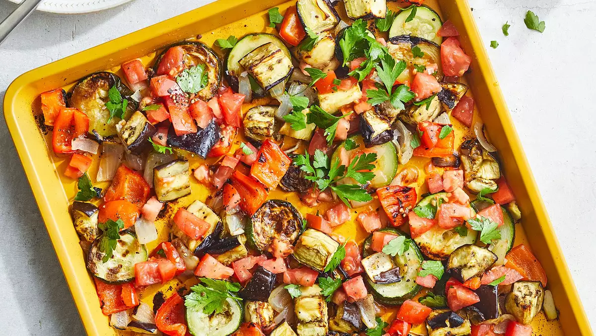

Ratatouille

Description
Ratatouille is Provencal dish that is a traditional vegetable stew
made with summer vegetables: tomatoes, zucchini, peppers and eggplant.
Ingredients
- 1 (1 pound) eggplant, cut into 1-inch cubes
- 1 zucchini, sliced
- 1 small green bell pepper, chopped
- 1 onion, coarsely chopped
- cooking spray
- ¼ teaspoon ground black pepper, divided
- 1 tomato, chopped
- 1 tablespoon extra-virgin olive oil
- ¼ cup chopped fresh parsley
- ⅜ teaspoon salt, divided
Steps
- Preheat the oven to 425 degrees F (220 degrees C).
- Arrange eggplant, zucchini, bell pepper, and onion on a greased or foil-lined baking sheet.
Spray vegetables with cooking spray. Season with 1/8 teaspoon black pepper.
- Roast in the preheated oven, stirring and rotating pan once during cooking,
until vegetables are lightly browned and tender, about 40 minutes.
- Meanwhile, stir together tomato, oil, parsley, and 1/8 teaspoon each salt and black pepper in a large bowl.
Add cooked vegetables and remaining 1/4 teaspoon salt. Toss to combine.